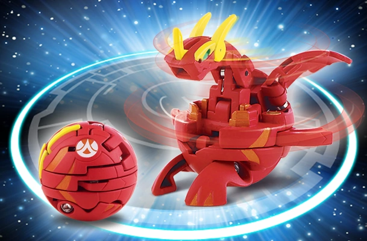
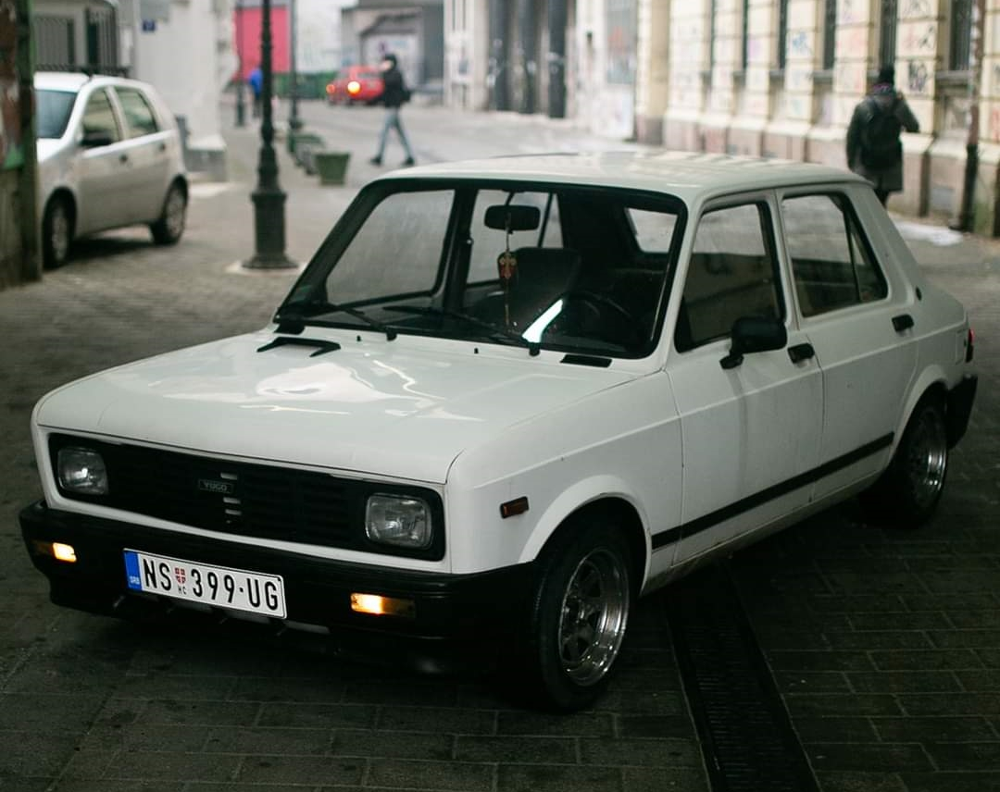
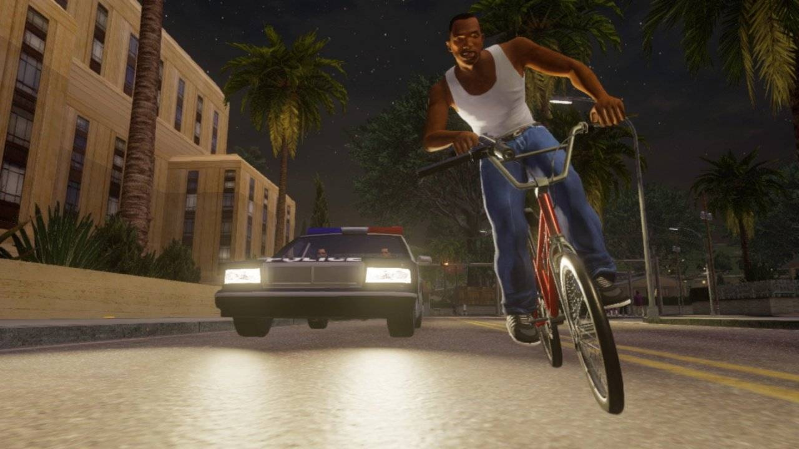

I have many hobbies. For example, when I was a kid, I used to collect marbles, bakugan, trading cards, but especially bakugan.
Loved those things so, so much.
Nowadays, I'm grown up and don't play with toys anymore. I guess fixing stuff at home and playing around with electronics counts?
I break them sometimes, but mistakes are the teacher of life.
I enjoy to drive around town in my Yugo, I have an affection for these old vehicles. I also play video games like rocket league,
counter-strike, team fortress 2, but one of the games I've played the longest is the well known childhood classic, GTA San Andreas.
Apart from just playing GTA:SA, I also make stuntrun, motocross and parkour themed map designs for a server where I've been manager for almost a decade now.
You can visit our website here or join our Discord server to find out more.


